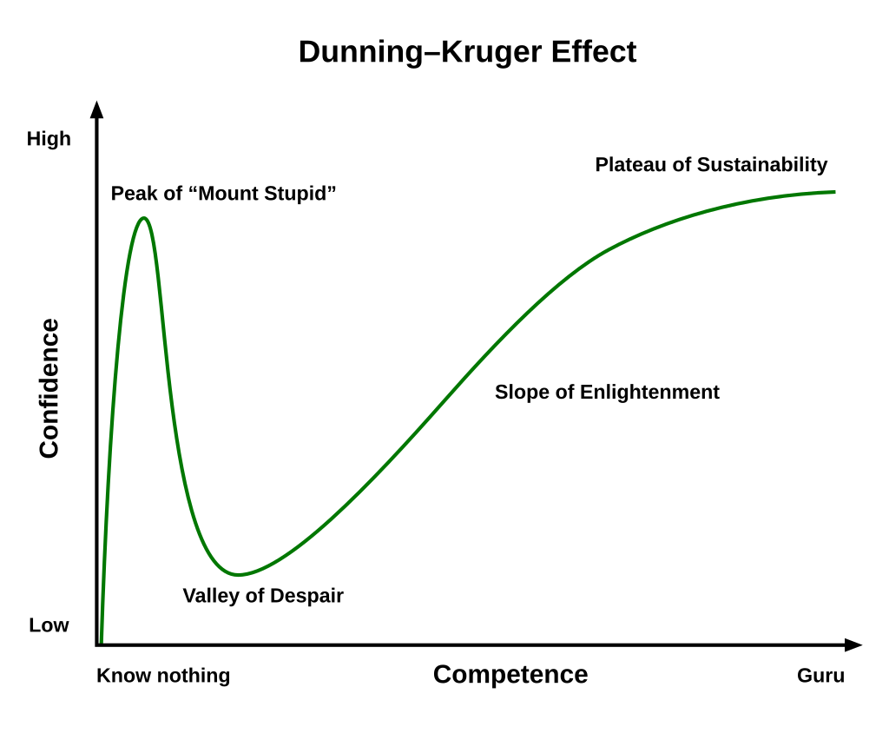

The Dunning-Kruger Effect + Effective Prompting Strategies
Slide 1 of 20
Today's Plan 📋
🎯
The Dunning-Kruger Effect - A life lesson about confidence and competence
Quick Vocab Review - Bandwidth and Cache from Day 16
New Tech Terms - Streaming and Algorithm
Mastering AI Prompts - How to get better results from Copilot
Game Development Time - Work on your game assignment
Assignment Reminder: Your game is due November 15th - that's about 2 weeks away!
Slide 2 of 20
The Dunning-Kruger Effect 📊

Slide 3 of 20
Understanding the Curve 🧠
The Journey of Learning:
"Mount Stupid" - When you first learn something, you think you know it all! Confidence is high, but actual competence is low.
"Valley of Despair" - You realize how much you DON'T know. Confidence drops as you understand the complexity.
"Slope of Enlightenment" - You're learning and improving. Confidence grows with actual competence.
"Plateau of Sustainability" - You've gained real expertise. Confidence is calibrated with your actual ability.
💡 Life Lesson: If you feel super confident about something you just learned, you're probably on Mount Stupid! Real experts know how much they don't know.
Slide 4 of 20
Real-World Applications 🌍
Where You'll See This:
Learning to Code - First "Hello World" feels amazing, then you realize programming is hard!
Starting a Business - Many new entrepreneurs are overly optimistic at first
Driving - New drivers often overestimate their skills
Video Games - Beat the tutorial level? Wait until you face real challenges!
Social Media Experts - Someone posts 5 TikToks and thinks they're a marketing guru
Key Takeaway: Be humble. When you're learning something new, remember you're probably on Mount Stupid. Keep learning, embrace the Valley of Despair, and climb toward real competence!
Slide 5 of 20
Vocab Review 📚
Bandwidth
Quick Reminder: The maximum amount of data that can be transmitted over an internet connection in a given amount of time, measured in Mbps.
Think of it like: A pipe carrying water - bigger pipe (more bandwidth) = more data at once!
Examples:
Netflix 4K needs ~25 Mbps
Gaming needs 3-6 Mbps
Everyone in your house shares the total bandwidth
Slide 6 of 20
Vocab Review 📚
Cache
Quick Reminder: Temporary storage where your browser saves copies of files to make things load faster next time.
Think of it like: Keeping snacks in your backpack instead of going to the kitchen every time!
Why "clear your cache" fixes things:
Old cached files might be outdated or corrupted
Forces browser to download fresh copies
Trade-off: Sites load slower the first time after clearing
Slide 7 of 20
New Vocabulary 📚
Streaming
Definition: A method of transmitting or receiving data (especially video and audio) over a network as a continuous flow, allowing playback to begin while the rest of the data is still being received.
Real-world: Like watching a YouTube video that starts playing right away - you don't have to wait for the entire video to download first. The data "streams" to you in real-time!
Streaming vs Downloading:
📺 Streaming
Watch/listen immediately
Doesn't use device storage
Needs internet connection
Data not saved permanently
💾 Downloading
Must wait for full download
Uses device storage
Works offline after download
File saved permanently
Fun Fact: In 2024, global internet video traffic accounts for over 82% of all consumer internet traffic! Netflix alone streams over 1 billion hours of content per week.
Slide 8 of 20
New Vocabulary 📚
Algorithm
Definition: A step-by-step set of instructions or rules designed to solve a specific problem or perform a specific task. In computing, it's the logic that tells a program what to do.
Real-world: A recipe is an algorithm! It's step-by-step instructions to make a cake. Follow the steps in order, and you get the result you want.
Algorithms You Use Every Day:
Social Media Feeds - TikTok/Instagram algorithms decide what posts to show you
Search Engines - Google's algorithm ranks which results to show first
Netflix Recommendations - Algorithm suggests shows based on what you watch
Spell Check - Algorithm finds and suggests corrections for typos
Navigation Apps - Algorithm calculates the fastest route
Fun Fact: The word "algorithm" comes from a 9th-century Persian mathematician named Muhammad ibn Musa al-Khwarizmi. His name became "algorism" in Latin, which evolved into "algorithm"!
Slide 9 of 20
Why Should You Care? 🤔
Algorithms Shape Your World:
What You See - Social media algorithms control what content appears in your feed
What You Buy - E-commerce algorithms suggest products and set prices
What You Learn - YouTube's algorithm affects what educational content you discover
Who You Meet - Dating apps use algorithms to suggest matches
Your Opportunities - Job sites use algorithms to match you with positions
⚠️ Important: Understanding algorithms helps you be a smarter consumer of technology. You realize that what you see online isn't random - it's calculated to keep you engaged!
💡 Career Note: Algorithm design is one of the most valuable skills in tech. Companies like Google, Meta, and TikTok pay top dollar for engineers who can create better algorithms!
Slide 10 of 20
Mastering AI Prompts 🤖
💬
Your game assignment quality depends heavily on how well you communicate with Copilot!
What is a Prompt?
A prompt is the instruction or question you give to an AI. Think of it as giving directions to someone who's really smart but needs clear, specific guidance.
Key Principle: AI is incredibly powerful, but it's only as good as the instructions you give it. Garbage in = Garbage out. Great prompts = Great results!
Slide 11 of 20
What Makes a BAD Prompt? ❌
Example 1: Too Vague
"Make a game"
Why it's bad: No details! What kind of game? What features? What style? Copilot has to guess everything.
Example 2: No Context
"Add sounds"
Why it's bad: What sounds? When should they play? What format? Too ambiguous.
Example 3: Too Complex at Once
"Create a multiplayer RPG with 3D graphics, inventory system, quest system,
chat, leaderboards, achievements, and boss battles"
Why it's bad: Way too much at once! Break it down into smaller tasks.
Slide 12 of 20
What Makes a GOOD Prompt? ✅
Example 1: Specific & Detailed
"Create a Snake game where the snake moves with arrow keys, eats red food
dots to grow longer, and the game ends if the snake hits the wall or
itself. Use a green snake on a white grid background."
Why it's good: Clear game type, specific controls, defined win/loss conditions, and visual details!
Example 2: Includes Context
"Add a 'pop' sound effect that plays whenever the snake eats food.
Use the Web Audio API to generate the sound programmatically."
Why it's good: Says WHAT sound, WHEN it plays, and HOW to implement it.
Example 3: Builds Incrementally
"First, create basic Snake movement with arrow keys. Don't add food
or collision detection yet - just get the snake moving smoothly."
Why it's good: One step at a time! Test each feature before adding more.
Slide 13 of 20
Anatomy of a Great Prompt 🔬
Include These Elements:
Context - What are you building? Where does this fit?
Specific Details - Colors, sizes, behaviors, exact requirements
Constraints - What NOT to do, limitations, required technologies
Examples - "Like [example]" or "Similar to [reference]"
Desired Outcome - What success looks like
Perfect Example:
"I'm building a Flappy Bird clone. Create the bird sprite as a yellow
circle with a small orange triangle for a beak. The bird should:
- Start in the middle of the screen
- Fall due to gravity (9.8 units/second squared)
- Jump up when spacebar is pressed (jump height: 50px)
- Rotate slightly based on vertical velocity
Don't add pipes yet - just get the bird physics working smoothly.
Similar to the original Flappy Bird movement feel."
Slide 14 of 20
Real Example: Building a Snake Game 🐍
Step 1: Start with a Complete Basic Version
Initial Prompt:
"Create a Snake game in HTML, CSS, and JavaScript. The game should have:
- A 20x20 grid playing area
- A green snake that starts in the center (3 segments long)
- Arrow keys to control direction
- Red food that appears randomly
- Snake grows when eating food
- Game over if snake hits walls or itself
- Score display
Use simple colored squares for the snake and food. Don't add sounds
or fancy graphics yet - just get the core gameplay working."
What happens: Copilot creates a working basic game. You test it and notice some issues or missing features.
Slide 15 of 19
Real Example: Building a Snake Game 🐍
Step 2: Fix Issues & Add Polish
Follow-up Prompts (based on testing):
Prompt 1: "The snake is moving too fast. Slow it down so each move
takes 150 milliseconds instead."
Prompt 2: "Add a start screen with a 'Press Space to Start' message
and show the controls (arrow keys to move)."
Prompt 3: "When the snake eats food, make the food appear in a new
random location. Make sure it doesn't appear on the snake's body."
Prompt 4: "Add a game over screen that shows the final score and a
'Press R to Restart' button."
💡 Key Point: Each prompt fixes one specific issue or adds one feature. Test after each one!
Slide 16 of 19
Real Example: Building a Snake Game 🐍
Step 3: Add Assignment Requirements
Adding Required Features:
Prompt 5: "Add two sound effects: a 'boop' sound when the snake eats
food, and a 'crash' sound on game over. Include a mute button in the
top right corner."
Prompt 6: "Save the high score in localStorage. Display it on the
start screen: 'High Score: [number]'. Update it if the player beats
their previous high score."
Prompt 7: "Make the game gradually get harder - increase the snake
speed by 5% every time the score reaches a multiple of 5."
Prompt 8: "Add a gradient background and make the game board have a
border with a nice color scheme. Make the snake have a slightly darker
head than the body."
Slide 17 of 19
Debugging with AI 🐛
How to Ask for Help When Things Break:
❌ Bad Debugging Prompt:
"It's not working"
Copilot has no idea WHAT isn't working or WHY.
✅ Good Debugging Prompt:
"The score counter shows 'NaN' instead of numbers. It should increment
by 1 each time the player collects a coin, but something is wrong with
the addition. The score variable starts at 0."
Specific problem, expected behavior, and relevant context!
Effective Debugging Prompts Include:
What's broken: "The restart button doesn't reset the score"
Expected behavior: "It should set score back to 0"
What's actually happening: "The score stays at the old value"
When it happens: "Only happens after game over screen"
Slide 18 of 20
Pro Tips for Your Game 🎮
1. Start with the Minimum Viable Game (MVG)
Get the core gameplay working first. Don't worry about polish, sounds, or fancy features until the basic game is playable.
2. Test Every Single Change
After Copilot adds or modifies code, test it immediately in Live Preview. Catch bugs early!
3. Ask Copilot to Explain
If you don't understand the code: "Explain what this function does in simple terms"
4. Reference Your Assignment Requirements
When prompting, mention specific requirements: "Add sound effects (required for the assignment) when the player jumps and when game ends"
5. Don't Give Up - Iterate!
If first attempt isn't great, refine your prompt: "Make the colors brighter and more vibrant" or "The enemies are moving too fast - slow them to 70% speed"
Slide 19 of 20
Work Time! 🚀
💻
Time to Build Your Game!
Use what you learned about prompting to create an amazing game.
Today's Goals:
Apply good prompting techniques with Copilot
Get your core game mechanics working
Test frequently and iterate
Ask for help when stuck!
📅 Reminder: Game assignment due November 15th
Deploy to GitHub Pages
Submit your live game URL
💡 Remember: Great prompts = Great results. Be specific, iterate in small steps, and test everything!